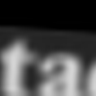
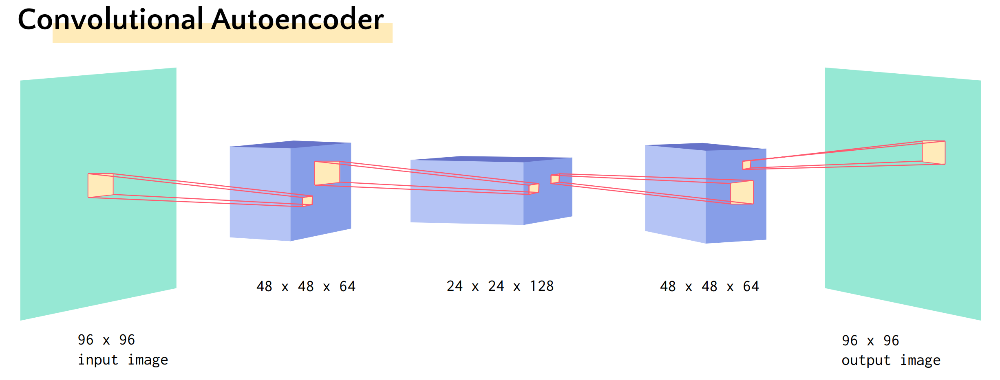
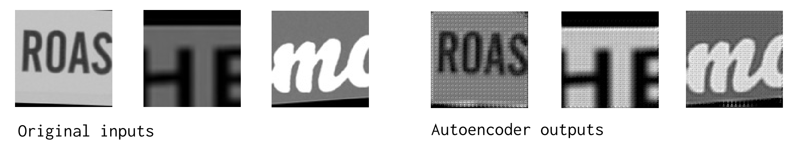
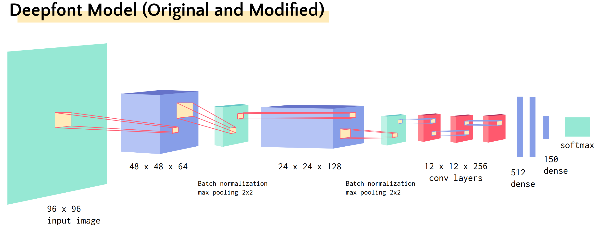
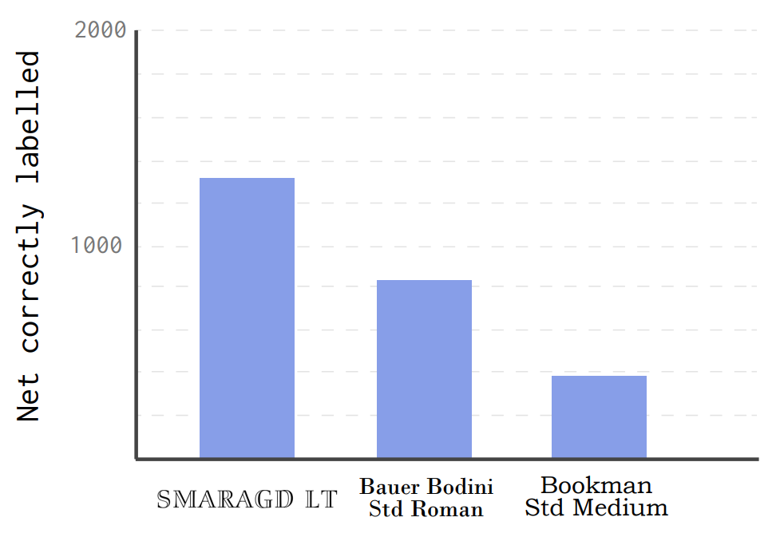
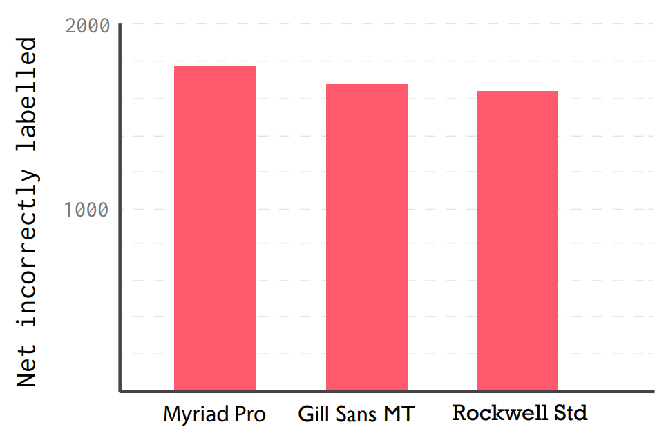
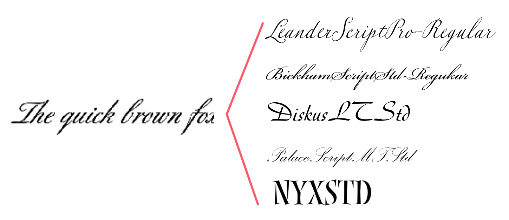
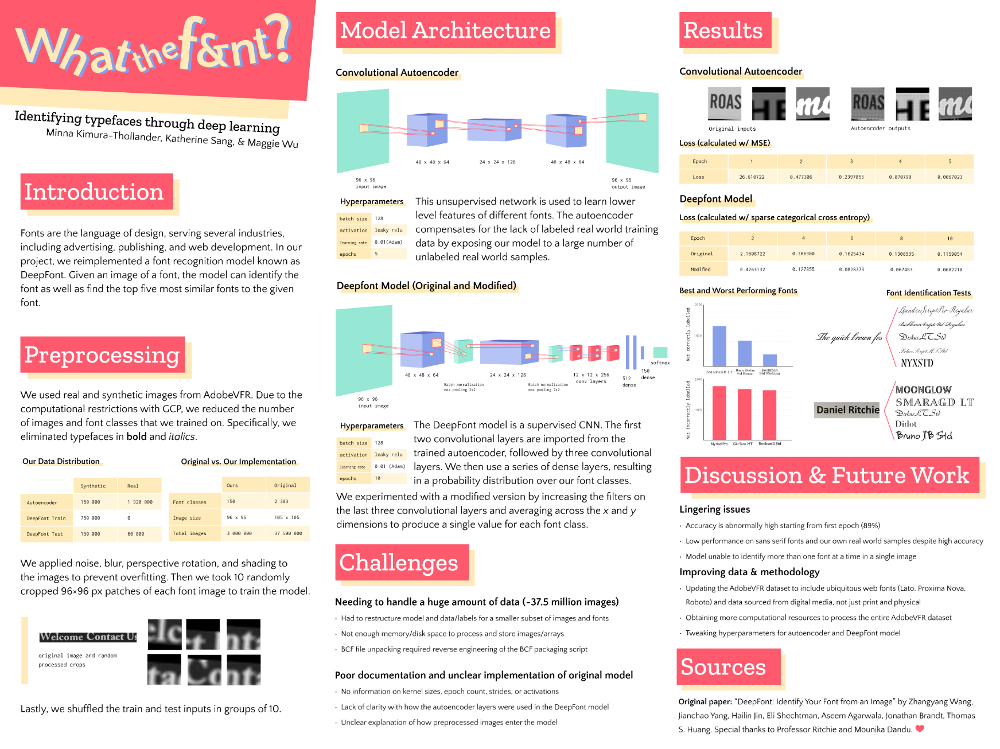

What The Font ❔
Dec 2019 | Data & ML
Have you ever looked at a font and thought it was so nice but you had no way of identifying it
besides uploading it onto a (not-very-good) font identification website and receiving completely
dissimilar fonts? That's where the DeepFont model comes in.
The DeepFont model is based on a paper written in
2015 by researchers at Adobe and Snapchat.
Basically, their mission was to figure out a way to
reliably identify fonts given pictures of font images through a deep learning model.
Given the usefulness of typography in industries like marketing, publishing, public transportation, and
web development, this model was a revolutionary way to identify fonts!
I worked with a team of 3 people to implement the DeepFont model on a smaller scale. I've written our
names and our roles below!
- Katherine Sang — code, poster
- Maggie Wu — code
- Me — code, illustration
Data
We used data from the AdobeVFR dataset, a dataset containing font images created by
the original authors of this paper.
The data is split into two categories:
- Real data - font images of physical things, like newspaper clippings or signs
An example of a real font image would be the following:
- Synthetic - computer-generated font images
An example of a synthetic font image would be the following:
What was great about this dataset is that all of the real images came in raw image form (i.e. PNGs).
What was not so great was that the synthetic images were encoded in a BCF file, because the original
authors wanted to avoid copyright issues from Adobe. We were lucky enough to be provided with
the original script that packed the raw images into a BCF file, so we reverse engineered it to
obtain the good 'ol PNGs.
Preprocessing
Preprocessing is where you prepare your data to be piped into your model. Our model first required us
to apply noise, blur, perspective rotation, and shading on the original font image. This is to
account for "messy" font images present in the real world, and also because designers often manipulate
fonts by rotating them.
After these filters were applied, we took ten 96x96 crops for each font image. The data is saved in the
form of numpy arrays in hdf5 files (a file that can theoretically hold any amount of data).
So, let's take the following font image:
Then an example of the some of the crops that would be generated are:

At this point, the data is ready to be processed!
Adjustments
If we processed the original data used by the authors of this paper, we would need to process 37.5 million images!
Believe me, we tried to do this, and it was not feasible. We would need Brown to buy us a super huge
computer for $50,000.
To compensate for lack of computational resources, we cut down to 150 fonts, meaning we processed
3 million images. It's not anywhere close to the original numbers, but 3 million is still enough
data to get some results!
Model Architecture
DeepFont consists of two models: the convolutional autoencoder, and the actual DeepFont model.
CONVOLUTIONAL AUTOENCODER
First, to explain a little: a convolutional autoencoder is a type of artificial neural network
used to learn datain an unsupervised manner. Whatever data you feed into a convolutional autoencoder,
it will discover the "main features" without you telling it directly. For example, a convolutional
autoencoder could learn that the number 1 is primarily defined by a straight line.
The reason we needed a convolutional autoencoder is because we had a lot of real data that was unlabeled.
Because we couldn't know anything about the fonts (that is, unless you are a font identifying master), it
made sense to just hand that data over to an autoencoder and have it figure out what important features
fonts have. Conceptually, you can understand this as the autoencoder learning concrete features such as
"serif vs non-serif" but also abstract things that we as humans don't understand!
Here's the architecture of the model (illustrated by me in Adobe Illustarator):

And here are some results of the model:

The results here mean that the autoencoder did pretty well. Because the output looks nearly identical to the
input, it means the autoencoder was able to pick up the key features of every image exceedingly well.
DEEPFONT MODEL
This is where all the real stuff happens. The DeepFont model imports its first two layers from
the convolutional autoencoder (a long with a couple other convolutional layers), followed by
dense layers that are then softmaxed to give the probability distribution over the 150 fonts
we selected. Note that unlike the convolutional autoencoder, this is a supervised network, so we
are giving the model the true labels of the fonts.
Here's the model architecture:

On the first epoch, the accuracy was 89%, which is suspiciously good. It could be because the
autoencoder just gave us so much useful information that it's doing really well at identifying fonts.
Best and Worst Performing Fonts
The best performing fonts were as follows:

Something interesting is how these are all fonts with serif.
The worst performing fonts were as follows:

Notice how the first two fonts are sans serif, and they actually look quite similar to each other.
We hypothesize that our model performs worse with sans serif fonts because they have less
distinguishing features than serif fonts.
Case Studies
We also tested how our model did on tests with individual font images. The image below is
in Leander Script Pro.

As you can see, the model was able to identify Leander Script Pro (the topmost font).
The four fonts that follow also have a cursive style, so it's understandable why the model would
also recommend those fonts as the true font label.
Here's a case where the model didn't do so well:
The fonts that the model recommends here are way off. This case study further confirmed our suspicions
that the model has trouble recognizing sans serif fonts.
Poster
Here's our final poster we presented on December 12th.

Reflection
At the end of the project, we were able to look at the actual website! I'll just provide a screenshot here if you
don't feel like navigating to their website:

We were all really surprised at how different it was! During our design we hyper-focused on the coffee aspect,
but you can see in the screenshot above that they didn't really use coffee as their motif.
We emailed our design to Buy Me a Coffee, expecting no reply, but to our surprise we received one from the CEO,
Jijo Sunny! It was very touching to receive an email back from a startup, because I would think they
are too busy to respond to students.

Overall, this project was an unique challenge in using our imagination, and a worthwhile exercise in website design!
Though this design will never become a reality, I felt that this project gave me new experiences in the design process,
and how refine your projects after receiving feedback.